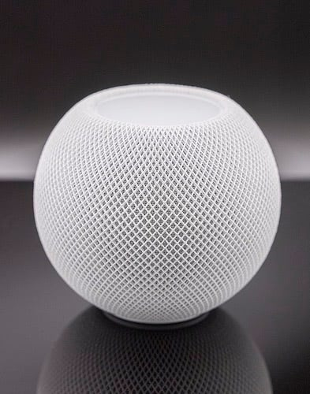
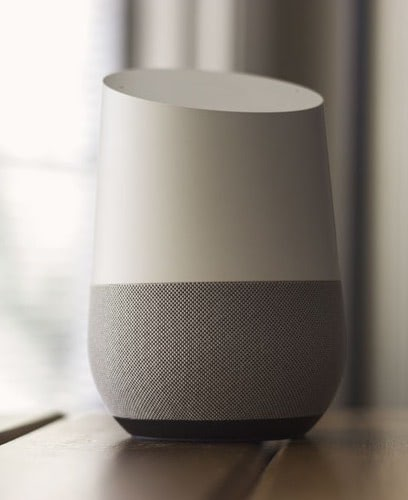
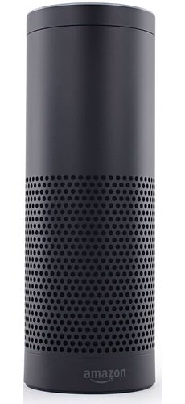

Alexa, Are You Still Listening?
Millions of people have an Amazon Alexa device in their homes. However, most people don’t fully realize the privacy implications of smart home devices, especially those made by Amazon. I wanted to learn more about this subject, and what I discovered has convinced me that I will never have a smart home device in my house.
Presentation
Paper
Kyle Schleifer
Department of Communications Studies University of Miami
JMM 435: Media Technology
Professor Michel Dupagne
November 8, 2020
Abstract
Many of Amazon’s customers view the Alexa device as a practical and futuristic helper. As a result, customers belittle or misjudge the amount of personal information that the device takes. The focal point of this research paper is to examine the possible privacy issues that ensue from using Amazon’s Alexa device. The research paper examines instances in which law enforcement has used Alexa in order to gain personal information for an investigation. The paper also reviews and examines Alexa’s policies of use. Lastly, the relevance of the fourth amendment is examined in regards to how it applies with criminal investigations.
Introduction
In the last couple of years, personal assistants and smart speakers have burst onto the scene as a fun and interactive means of providing people with both information and entertainment. Upon the release of Alexa in 2014, users have been fascinated with the convenience of features such as buying items, playing music, in addition to the device providing information. In order to use the device, users must agree to the product’s terms of use, which include third party services, digital content, software, the Alexa app, etc. Additionally, the device features third-party skills that give customers glimpses of futuristic functionalities. There are hundreds of thousands of third-party skills that the user could easily add to the device which could serve as entertainment or to provide information. These skills include getting hands free weather reports, nutrition tips, recipe ideas, finding new restaurants, etc. Alexa is also equipped with categories in order to pin down segments of skills, such as health and fitness, business and finance, food and drink, etc. Amazon over time has carefully masterminded a safe, convenient, and secure public image for their personal assistant device.
Despite the innovative use of a personal assistant with hand free functionality, there have been growing amounts of red flags and concerns with the device. Amazon, in recent years, has faced issues in regards to the privacy and safety of users’ personal information. Further, there have been numerous situations in which Alexa breached users’ privacy. These concerns and issues relate to exactly how Amazon handles personal information and data within Alexa’s cloud. There have also been instances in which the devices have been reported recording 24/7, going rogue, and even malfunctioning as a result of broadcast media. Despite this, Amazon states that the device “sleeps” until it is activated by a “wake word” that must be performed by the user speaking to the device. Additionally, several hardware vulnerabilities within the device have led to personal information being leaked and accessed by third parties. There has also been a surplus of articles and studies published in regards to Amazon eavesdropping and recording/storing conversations. Finally, there remain questions as to whether it is reasonable to expect privacy while using the device within a person's home. While Amazon states recording and storing conversations helps improve the device's functionality, there is a clear link between exploits and leaks due to Alexa keeping voice transcriptions. As a result of Alexa’s eavesdropping, unwanted surveillance and control could ensue from the usage of the device.
What is Alexa?
According to Tomsguide.com, “Alexa is a virtual personal assistant designed to compete with the likes of Apple's Siri, Google Now, and others. Alexa, which was designed by Amazon's secretive Lab126, can listen to your voice commands and respond with contextual responses to help you get the job done.” (Reisinger, 2016).

HomePod mini

Google Home
Facebook Portal

Amazon Echo
HomePod mini: By Arne Müseler / www.arne-mueseler.com, CC BY-SA 3.0 de, Link
Google Home: By NDB Photos - Google Home tech, CC BY-SA 2.0, Link
Facebook Portal: Facebook. "Portal." https://portal.facebook.com/products/portal/.
Amazon Echo: By Frmorrison at English Wikipedia, CC BY-SA 3.0, Link
The article states that due to Amazon’s cloud-based program, the device has been able to overcome challenges that other smart devices face in terms of understanding user commands. In order to broaden the liking of Alexa, Amazon has allowed numerous third-party to carry and support the device. These third-parties include LG SmartThinQ Hub, Pebble Core wearable, the Nucleus, and the CoWatch.
Alexa is also equipped with skills which are offered by the company and third-party developers. These skills range from sports, entertainment, news and social media, and many more. Currently there are over 100,000 skills offered by Alexa. In relation to Alexa’s skill the Tomsguide article states, “With Alexa's help (and after you add Skills), you can request a car through ride-sharing service Lyft. On the sports side, you can use Alexa to get the latest scores from your Yahoo Fantasy Football team or see who's winning the big game with professional sports radio broadcasts, like those from Major League Baseball.” Alexa also has the capabilities to integrate with user’s smart homes. Alexa can connect to various smart home devices such as WeMo, Google’s Nest, and Philips Hue. With the assistance of Alexa users can also figure out what is currently on their Google Calendar. Users can also set up new events and figure out what traffic is looking like in a certain location.
Privacy Issues With Alexa Skills Kit
Recently there have been studies researching the safety and security of users’ personal information with Amazon’s skills program. The program consists of an ecosystem of “skills” that are created by third party creators using the Alexa Skills Kit technology. The installation of this program in 2015 resulted in Amazon receiving personal data of its users. Amazon states in their “Privacy Settings” that the usage of personal information is to help improve the device and help it get smarter about the user. In addition to Amazon receiving data, third party creators of the skills in some circumstances were also able to obtain this same data. According to a study conducted by Abdulaziz Alhadlaq, regarding the Alexa skills functions, “75 percent of Alexa Skills apps do not have privacy policies. Furthermore, even among those Skills for whom a privacy policy is required by Amazon’s policy, 3.5% do not have a valid one and 70% are not customized to Alexa.” The current design of the Amazon Skill program includes an optional use of Privacy Policy and Terms of use for creators, unless the skills have account linking. Without agreeing upon a Privacy Policy and Terms of use for a skill, users are not made aware of what they are committing themselves to do, what their obligations are, and the penalties they might be subjected to. Consumers are not made aware of this design in the Skill portion of the device due to an overall lack of communication and information provided by Amazon. Alhadlaq research also states that, “among the 2,860 Skills with a link to a privacy policy, 269 are unreachable due to 404 and 500 HTTP errors, timeout errors, and access denied errors.” (Alhadlaq, 2019). The absence of privacy standards from Amazon leaves users’ information vulnerable to mischievous third-parties. Amazon states that the device only begins recording voice audio clips when the phrase “Alexa” is spoken, or the user utters the phrase of the skill name they are trying to use. This function has led to situations where the device is accidentally activated by the user. As a result, conversations are unknowingly recorded by the device without the user's knowledge. This lack of communication could reveal customers' personal information to third-parties and other dangerous attackers.
Attacks On Users Information
There have been several reported instances in which Alexa has either incidentally leaked a user’s information or data has been stolen by a third-party. According to TheGuardian.com, “an Alexa device recorded a woman’s private conversation between her and her husband and sent it to a random number in their address book without their permission.” (Wolfson, 2018). The woman's colleague was able to recount the exact conversation that was sent and stated she was able to hear everything. This malfunction not only violated the customer's privacy, but the situation could have turned harmful. A security malfunction of this nature could result in a dangerous situation. Additionally, according to saftey.com, “there are common techniques that hackers are able to easily use to access users'private information.” (Safety Team, 2020). The website further details that in order for hackers to exploit another user’s data, Alexa would have to interact with a link that allows infiltration from the hacker. There are several parts of the Alexa “code” that is easily manipulated, thus leaving users’ private data vulnerable. In the situation where a hacker is able to gain control over an Alexa, he or she would be able to enable certain phrases that would trigger the device to turn on and record a user’s personal conversations or leak private information. Moreover, safety.com states a common theory is hackers could gain control of another user’s banking history through the same breach. Amazon denies the validity of this theory and states that the company was not aware of any instances in which customers’ information was breached through this method. Ironically, many of these instances of malfunctions and privacy leaks stem from the very feature that makes Alexa unique, (the AVS) feature. Alex Voice Services or (AVS) is a piece of technology in the device that records and processes information spoken to the device. Although this piece of technology is unique in that it allows customers to speak to Alexa through a microphone, privacy issues stem from this very feature.
The Fourth Amendment Analysis
In order to fully examine the extent to which users’ data is protected, it is important to break down the Fourth Amendment in relation to Alexa. The Constitution’s Fourth Amendment reads, “The right of the people to be secure in their persons, houses, papers, and effects, against unreasonable searches and seizures, shall not be violated, and no Warrants shall issue, but upon probable cause, supported by Oath or affirmation, and particularly describing the place to be searched, and the persons or things to be seized.” As stated, this amendment protects individuals from seizures of their possessions and unreasonable searches of their properties. Despite this, there are situations that serve as exceptions, including a warrant with probable cause. As a result, authorities have subpoenaed Amazon to hand over Alexa in certain situations, such as in murder investigations. Throughout history, the Supreme Court has struggled to decide exactly what constitutes a search and seizure. In 1928, in the case of Olmstead vs. U.S, the court decided that the Fourth Amendment was not relevant unless there is a search/seizure of an individual's material items such as papers or home. The conclusion in this case was that tapping a phone call did not allow search and seizure because it was not a physical search.
In the years following this case, the court has changed their view on situations that constitute search and seizure as a result of the emergence of technology. In 1967, Katz vs. U.S., the Supreme court overruled Olmstead vs. U.S, and concluded that the Fourth Amendment seizures now apply to tangible items such as wire tappings and recordings taken via audio. This overruling meant that a search no longer needed to be a bodily invasion, instead it could be digital. Justice Harlan concluded the case by explaining that an individual should have the right to privacy in a place where they are by themselves, such as their home, but should not have the same assumption in places that are public. Moreover, an individual should expect to have privacy in their homes, even with tangible items like wire tappings and audio recordings, but not when they are in public. In the years following this ruling, numerous cases have upheld the notion that conversations that take place in private settings have protection under the Fourth Amendment.
Recently, Carpenter vs. U.S., challenged the ruling that the Fourth Amendment provides protection in a private setting. The case revolved around a challenge to this amendment, in that the government attempted to acquire Timothy Carpenter’s phone location information. The government attempted to receive information from Carpenter’s phone across a span of 127 days from his phone carrier without any prior warrant or search order. In prior cases, phone location did not fall under the requirements for a search under the Fourth Amendment due to there being a third party involved (the phone provider), which had access to the information. The court concluded that receiving Carpenter’s phone information did not fall under the requirements of a search because of the “nature of the cell phone location data.” Obtaining this information meant that everywhere Carpenter went, across the span of time, was now documented by the court. The court clearly stated, in this case, the Third Party Doctrine was limited to the location of the cell phone’s whereabouts.
Following the ruling found in Carpenter vs. U.S., the outcome suggests that devices such as Alexa, that are smart home devices, do not get protection from the Fourth Amendment. The amendment does not serve as protection, due to the ruling that the information gathered from Alexa by the government is “ not considered a traditional search and seizure.” The Third Party doctrine, in court cases, when a third party is involved and has access to the information, makes cases of this nature tricky. The ambiguity of the doctrine leaves many questions for users such as if it is reasonable to expect privacy while using the device. Additionally, there remains questions as to whether it is reasonable to expect privacy while using the device even within a person's home.
User Agreements
According to the Alexa Terms of Use, “Alexa may be stored on servers outside which you live, and that interaction data is stored in a cloud.” (Goettsche Partners, 2011). Therefore, if a user resides in the U.S. their data may be stored inside or outside of the states, and the same goes for users residing outside of the U.S. Consequently, different rules apply as to how data might be used for users according to which governing body their information resides at. Similar to this is how countries have their own laws for online gambling. For gambling websites, certain policies are put in place according to the country in which a customer resides. For Alexa, the policy means that different rules and policies apply to where a customer’s storage is placed. This could affect criminal situations in which data may be requested by the government. As touched on, Amazon also states in their policies that they “ release accounts and other personal information when we believe release is appropriate to comply with the law; enforce or apply our Conditions of Use and other agreements”. Thus, situations could ensue where the government asks for a user's information that resides in a different country than the U.S. Users should also be made aware of the statement of “other agreements” in the policy. Due to the vagueness of the statement, users may not know exactly which rules the company is checking for.
Amazon Employees Reviewing Private Data Collected
Bloomberg.com reported, “the team auditing Alexa commands has had access to location data and, in some cases, can find a customer’s home address.” (Day, 2019). The group of employees were granted access to customers voice commands, after a wake word was spoken, which had coordinates attached to the audio clips. In one instance, it was reported that employees overheard conversations between two people which included a potential sexual assault. The company chose not to intervene on the incident based on privacy regulations. Recordings of this nature include the customer’s first name, account number, and code of the specific device. The company stated that the usage of employee’s reviewing audio clips is solely for the purpose of bettering Alexa technology and improving its language understanding systems. Additionally, the company states that voice clips are properly encrypted in transit and that their workers follow a stringent code of conduct.
Broadcast Media Concerns
There remains a growing concern on the impact broadcast media could have on a potential attack on the Alexa device. Hackers could potentially embed an attack on user’s Alexa devices through a news outlet such as broadcast media. Hypothetically, an advertisement on TV could be embedded with ultrasounds that would command Alexa to add and purchase items, release users’ private information, or even potentially release users' locations. For example, according to Today.com, “A TV news anchor was commenting on a report about an Amazon Echo ordering a girl a dollhouse, but his phrasing seemed to have prompted viewers’ devices to start ordering dollhouses of their own” (T., 2017.) As a result of repeating the story of a child accidentally purchasing an item from speaking to her Alexa, the newscaster’s words were able to trigger user’s devices across the world into purchasing the same dollhouse. Another story, published by Fastcompany.com, reports on another instance on how encoded information could hack into Alexa. “Scientists at the Ruhr-Universitaet in Bochum, Germany, have discovered a way to hide inaudible commands in audio files–commands that, while imperceptible to our ears, can take control over voice assistants.” (Diaz, 2018). As stated by the individuals who conducted the research with the backends behind the device, the issue lies within the way the AI is designed.
Lawsuits in Regard to Privacy Breaches
Two separate lawsuits claimed that Alexa illegally recorded children without the consent of their parents. The federal lawsuits were filled in Settle and Los Angles in regards to a child 10 years old and 8 years old. Both lawsuits seek class action status, stated that Alexa stored numerous recordings of children, as stated by court documents. The website TheHill.com. stated that “The lawyers are seeking monetary compensation for the plaintiffs as well as an injunction that requires Amazon to get consent before it records minors’ interactions with Alexa. The lawsuit also asks Amazon to delete any existing recordings of children's voices.” (Capisi, 2019).
The concern in the case is that Alexa is storing millions of children’s audio recordings in an effort to track their usage and develop footprints for the users. Additionally, at no point did the children nor their parents’ consent to the audio recordings being saved. Amazon months later attempted to require arbitration for the case, but Judge Mitchell Peterson denied the request. The proposal from Amazon was that the parents of the plaintiffs (the children) entered a contract with Amazon once they purchased the device. The lawyers for the company stated that since the parents entered the agreement, the contract should apply for their children. The case hopefully will provide clarity in terms of the concerns users have for privacy, consent for audio recordings to be saved, and whether users should be notified when information is kept.
The Future of Privacy/Conclusion
Amazon’s Alexa is one of the more innovative technology devices designed in the last decade. The device is equipped with thousands of third-party skills including hands free weather reports, nutrition tips, recipe ideas, finding new restaurants, etc. Furthermore, the device comes with the convenience of having features such as buying items, playing music, and the device providing information. The functionality and layout of the device is also very user friendly, as the device comes with categories in order to pin down segments of skills. These skills include categories such as health and fitness, business and finance, food and drink, etc. The app store for the product now contains over 100,000 skills and counting. Overall the device has been a success for Amazon, as the company has sold more than 100 million devices across the world.
Despite the company’s success, according to Microsoft, “Forty-one percent of voice assistant users are concerned about trust and privacy.” (Wongchamcharoen, 2019). Statistics as high as this show that users are worried about the amount of personal information Amazon can potentially collect. In my opinion, users should be presented with options that would allow for them to opt out of situations in which they could be tracked. Situations such as lawsuits in regard to privacy breaches could be avoided with an option. For example, in the federal court cases at no point did the children or their parents’ consent to the audio recordings being saved. As a result, Alexa in the cases is accused of illegally recording children without the consent.
There should be a setting in which a user opts for their audio to be completely turned off when the device is not in use to avoid employees and other third parties from listening in on private conversations. Overall, users deserve to know when their data is being used or their audio is being reviewed. Customers, in certain situations, give no consent and have no knowledge of their information being used by Amazon. Privacy violations of customer information could lead to impacting trust people have in the company. As a result, if the loss of trust is great enough, Amazon’s sales, credibility, and revenue could decrease if people decide to stop using the product.
References
Olson, C. (2020, April 15). New report tackles tough questions on voice and AI. Microsoft Advertising. https://about.ads.microsoft.com/en-us/blog/post/april-2019/new-report-tackles- tough-questions-on-voice-and-ai.
Matney, L. (2019, January 4). More than 100 million Alexa devices have been sold. https://techcrunch.com/2019/01/04/more-than-100-million-alexa-devices-have-been-sold/.
Alhadlaq, A. (2019). Privacy in the Amazon Alexa Skills Ecosystem. https://petsymposium.org/2017/papers/hotpets/amazon-alexa-skills-ecosystem-privacy.pdf.
Wolfson, S. (2018, May 24). Amazon's Alexa recorded private conversation and sent it to random contact . The Guardian. https://www.theguardian.com/technology/2018/may/24/amazon-alexa-recorded-conversation.
Goettsche Partners. (2011). GP. Amazon. https://www.amazon.com/gp/help/customer/display.html?nodeId=201809740.
Day, M. (2019, April 24). Amazon's Alexa Team Can Access Users' Home Addresses. Bloomberg.com. https://www.bloomberg.com/news/articles/2019-04-24/amazon-s-alexa-reviewers-can-access-customers-home-addresses.
Wongchamcharoen, K. (2020, April 11). How voice assistants hijack your data and distract you from your daily task. Medium. https://medium.com/voice-tech-podcast/usefulness-of-voice-assistants-in-the-21st-century-explained-in-2-minutes-or-less-7e9d631f6258.
Safety Team. (2020, April 17). Amazon Echo Safety: Tips to Protect Your Privacy. Safety.com. https://www.safety.com/amazon-echo-safety/.
T. (2017, January 07). TV anchor's comment on Amazon's Alexa accidently places orders for viewers. Retrieved November 09, 2020, from https://www.today.com/video/tv-anchor-s-comment-on-amazon-s-alexa-accidently-places-orders-for-viewers-849778755835
Diaz, J. (2018, September 28). Alexa can be hacked–by chirping birds. Retrieved November 09, 2020, from https://www.fastcompany.com/90240975/alexa-can-be-hacked-by-chirping-birds
Vincent, J. (2019, November 06). After five years of Amazon's Alexa, why isn't it better? Retrieved November 09, 2020, from https://www.theverge.com/2019/11/6/20951178/amazon-alexa-echo-launch-anniversary-age-funtionality-not-changed-use-cases
Hartmans, A. (2019, January 4). Amazon has finally revealed how many Alexa devices have been sold. Business Insider. https://www.businessinsider.com/amazon-reveals-alexa-sales-2019-1.
Roblin, S. (2020, February 22). Is Amazon's Alexa A Complete Privacy Nightmare?The National Interest. https://nationalinterest.org/blog/buzz/amazon%E2%80%99s-alexa-complete-privacy-nightmare-126311.
Ratnesh. (2020, April 1). Amazon Alexa – Pros, Cons and Competitors. Seeromega. https://seeromega.com/amazon-alexa-pros-cons-competitors/.
O'Boyle, B. (2020, September 24). What is Alexa and what can Amazon Echo do? https://www.pocket-lint.com/smart-home/news/amazon/138846-what-is-alexa-how-does-it-work-and-what-can-amazons-alexa-do.
Campisi, Jessica. “Lawsuits against Amazon Claim Alexa Illegally Records Kids without Consent.” TheHill, The Hill, 13 June 2019, https://thehill.com/homenews/news/448415-lawsuits-against-amazon-claim-alexa-illegally-records-kids-without-consent.
Reisinger, D. (2016, November 7). Who (or What) Is Alexa? We Explain Amazon's Digital Assistant. https://www.tomsguide.com/us/amazon-alexa-faq,review-4016.html.